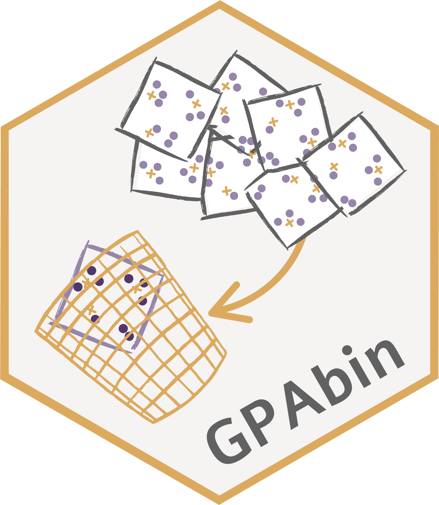

Package index
-
CLPpred() - Category level prediction
-
DRT() - Dimension reduction
-
GPA() - Generalised Orthogonal Procrustes Analysis
-
GPAbin() - Function to unify coordinates of multiple configurations
-
OPA() - Orthogonal Procrustes Analysis
-
biplFig() - Biplot function
-
compdat - Complete data example
-
evalMeas() - Evaluation measures when complete data is available
-
implist - List of multiple imputed data sets
-
impute() - Multiple imputation
-
missdat - Missing data example
-
missmi() - First step before constructing unified biplots
-
print(<missmi>) - Generic print function for objects of class missmi